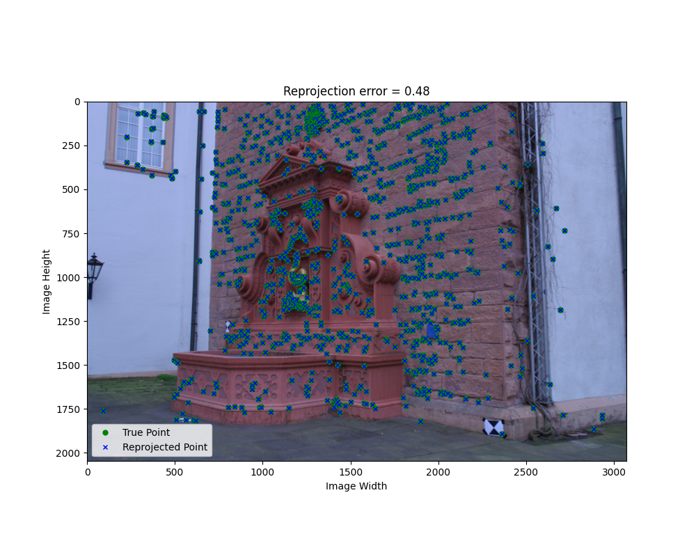
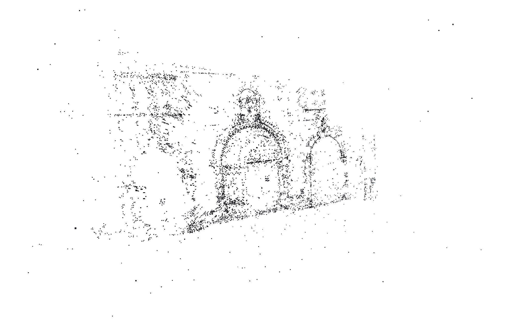
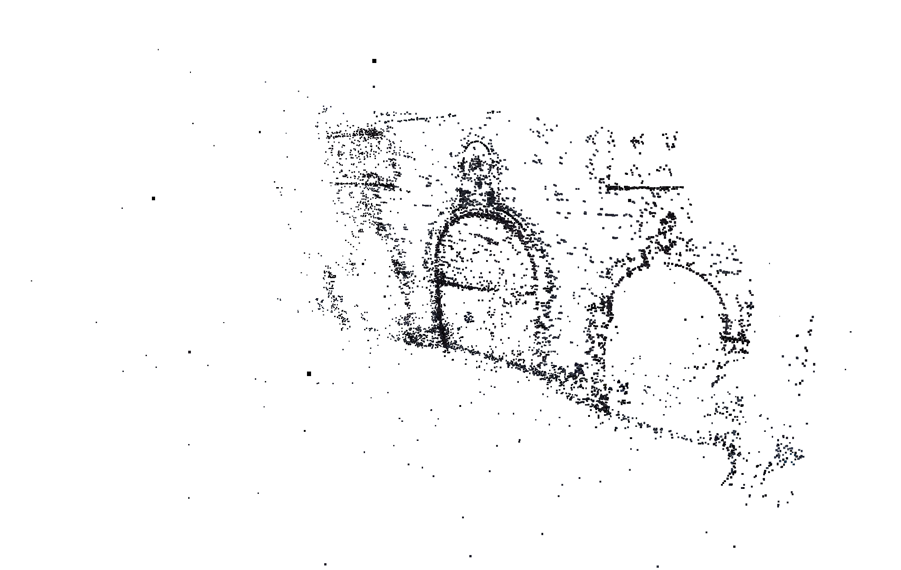
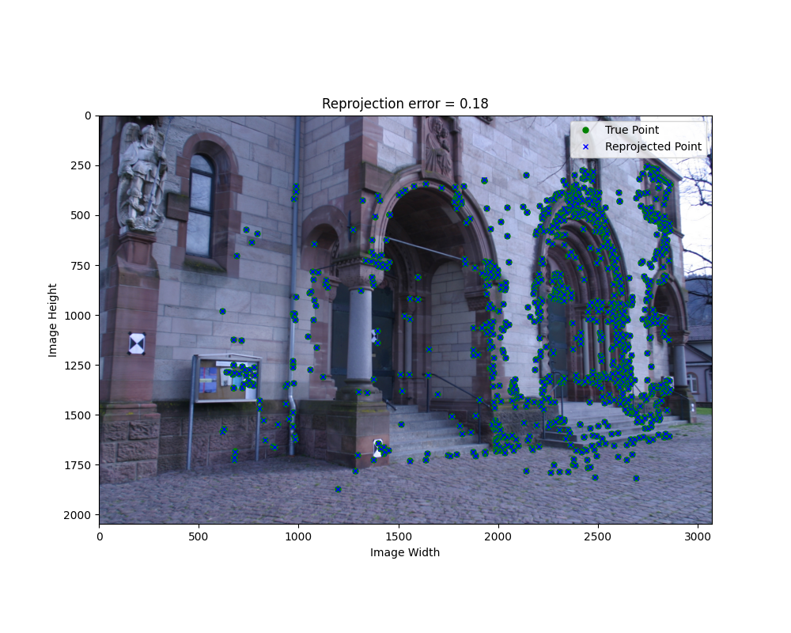

Assignment 2
Overview
Here is the checklist for the assignment:
- Implement the structure-from-motion algorithm with the start code. ✔
- Write up your project, algorithms, reporting results (reprojection error) and visualisations (point cloud and camera pose), compare your reconstruction with open source software Colmap. ✔
- Extra credit: Experiment with outlier filtering techniques. ✔
There are more results could be found in folder: assets/assignment2.
Algorithm and Implementation
Structure from Motion
Here is the pseudo code I used for SFM algorithm, more details could be found in comments of the code:
- Select the first two images for initial pose estimation and triangulation.
- Perform baseline triangulation for the first two images.
- Generate a 3D point cloud and evaluate reprojection error for the initial pair of images.
- For each remaining image:
- Estimate the new camera pose.
- Triangulate points from the new view.
- Update the 3D point cloud and compute reprojection error for the new camera.
Compute Reprojection Error
To compute the reprojection error, I used the following steps:
- Extract image data, load features, and filter out invalid 3D point references.
- Compute 3D points from valid references and project these points onto the image.
- Calculate the errors between the original 2D points and the projected 2D points, and filter out outlier errors.
- Calculate average reprojection error.
- Plot the final result.
Triangulate New View
I tried many different outlier filtering techniques, including RANSAC, dynamical range thresholding, and reprojection error filtering. I found that the best results were achieved by using a combination of reprojection error filtering and depth filtering.
For each new view, I used the following steps to triangulate the points:
- Iterates through all previous views to find feature matches with the new view.
- Filters matches to include only those not already associated with a point in the point cloud.
- For each pair of views with valid matches:
- Aligns the matched features and extracts corresponding 2D points from both images.
- Performs triangulation to generate new 3D points between the two views.
- Filters newly triangulated points based on reprojection error and position within dynamically defined ranges.
- Updates the global point cloud and reference indices for the new view with valid points.
Comparsion
Compare with resuly using colmap
I compare the result of my implementation with the result of Colmap. The results are similar, but there are some differences in the point cloud and camera pose. Beacuse Colmap uses more advanced techniques and optimizations, it produces a more accurate reconstruction with less noise. But my implementation is able to reconstruct more details of the scene, like the texture of the wall and statue.
Here is the comparison of the point cloud and camera pose between my implementation and Colmap for the fountain dataset:
Mine
Mean Reprojection Error = 0.5122 [t=5.8s]
Colmap
Mean Reprojection Error = 0.4278 [t=3.3s]
Showcases
Fountain-P11 Point Cloud Viewer
Fountain-P11 Reprojection Error Images
Mean Reprojection Error = 0.5122 [t=5.8s]


Herz-Jesus-P8 Point Cloud Viewer
Herz-Jesus-P8 Images
Mean Reprojection Error = 1.086 [t=3.0s]


